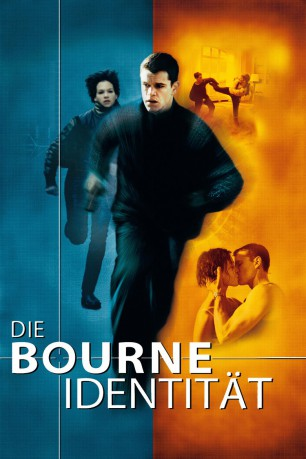

gesehen am 23.07.2015
gesehen am 23.07.2015Alternativ: The Bourne Identity gesehen am 23.07.2015
 
 IMDB-Wertung: 7.9 / 10
IMDB-Wertung: 7.9 / 10  Metascore:
Metascore: 
Ein junger Mann wird halb tot, mit 2 Kugeln im Rücken und totaler Amnesie von Fischern aus dem Mittelmeer gezogen. Die Suche nach seinem Ich und seiner Vergangenheit führt ihn nach Zürich, wo er in einem Schließfach Hinweise auf seine Identität findet. Er ist Jason Bourne und auf der Flucht vor seinem ehemaligen Arbeitgeber, der CIA. Schon haben sich Agenten an seine Versen geheftet um ihn aus dem Weg zu räumen, doch mit Hilfe der Touristin Marie gelingt ihm fürs erste die Flucht...
Jahr: 2002
Dauer: 119 Minuten
FSK: 12
Land: USA Studio: Universal PicturesTonspuren:
Untertitel: Deutsch,
Auflösung: 1080p (1920x1080) Größe: 7618 MB
Genre: Action, Thriller, Mystery
Regisseur:  Doug Liman
Doug Liman
Drehbuch: Tony Gilroy, W. Blake Herron, Robert Ludlum
Soundtrack: John Powell
Darsteller:
 Matt Damon als Jason Bourne
Matt Damon als Jason Bourne Franka Potente als Marie
Franka Potente als Marie Chris Cooper als Conklin
Chris Cooper als Conklin Clive Owen als The Professor
Clive Owen als The Professor Brian Cox als Ward Abbott
Brian Cox als Ward Abbott Adewale Akinnuoye-Agbaje als Wombosi
Adewale Akinnuoye-Agbaje als Wombosi Gabriel Mann als Zorn
Gabriel Mann als Zorn Walton Goggins als Research Tech
Walton Goggins als Research Tech Josh Hamilton als Research Tech
Josh Hamilton als Research Tech Julia Stiles als Nicolette
Julia Stiles als Nicolette Orso Maria Guerrini als Giancarlo
Orso Maria Guerrini als Giancarlo Demetri Goritsas als Com Tech
Demetri Goritsas als Com Tech David Bamber als Consulate Clerk
David Bamber als Consulate Clerk Vincent Franklin als Rawlins
Vincent Franklin als Rawlins Jimmy Jean-Louis als Wombosi Bodyguard , uncredited
Jimmy Jean-Louis als Wombosi Bodyguard , uncredited David Gasman als Deputy DCM
David Gasman als Deputy DCMDatei: X:\5-Pentalogie(A-Z)\Bourne\Bourne 1 - Identität, Die (2002, FSK12, 1920x1080).mkv seit 13.07.2015
Festplatte: HD Collection-3(N-Z)-6(A-Z)
 Es gibt insgesamt 8 Filme in der Gruppe '5-Pentalogie(A-Z)\Bourne'
Es gibt insgesamt 8 Filme in der Gruppe '5-Pentalogie(A-Z)\Bourne'